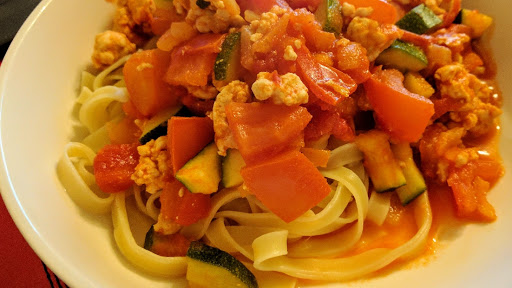

Turkey bolognese
Ingredients
- 2 tbsp olive oil
- 1 large onion, chopped
- 2 garlic cloves, finely chopped
- 500 g minced turkey
- 400 g can chopped tomatoes
- 2 tbsp tomato puree
- 300 ml chicken or beef stock
- 250 g spaghetti
- 1 large courgette, finely chopped
- 6 tomatoes, deseeded and chopped
- small handful chopped flat-leaf parsley leaves, to serve
Instructions
- Heat the oil in a large pan and fry the onion and garlic for 4-5 minutes over a low heat until softened. Stir in the turkey mince and cook for 5 minutes, stirring frequently. Stir in the chopped tomatoes, tomato puree and stock. Bring to the boil then simmer, uncovered, for 10 minutes.
- Meanwhile, cook the spaghetti according to the pack instructions. Stir the courgette and fresh tomatoes into the sauce and simmer for 5-6 minutes. Season.
- Drain the pasta and divide amonst four plates. Spoon over the sauce and serve scattered with parsley
Source
BBC Good Food: Low-fat FeastsShort URL Long URL Print